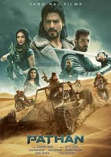
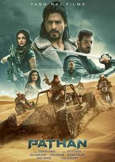

Production
Khan began his career with appearances in several television series in the late 1980s. He made his Bollywood debut in 1992 with Deewana. Early in his career, Khan was recognised for portraying villainous roles in the films Baazigar (1993), Darr (1993), and Anjaam (1994). He then rose to prominence after starring in a series of romantic films, including Dilwale Dulhania Le Jayenge (1995), Dil To Pagal Hai (1997), Kuch Kuch Hota Hai (1998), Mohabbatein (2000) and Kabhi Khushi Kabhie Gham... (2001). Khan went on to earn critical acclaim for his portrayal of an alcoholic in Devdas (2002), a NASA scientist in Swades (2004), a hockey coach in Chak De! India (2007) and a man with Asperger syndrome in My Name Is Khan (2010). His highest-grossing films include the comedies Chennai Express (2013), Happy New Year (2014), Dilwale (2015), and the crime film Raees (2017). Many of his films display themes of Indian national identity and connections with diaspora communities, or gender, racial, social and religious differences and grievances.
As of 2015, Khan is co-chairman of the motion picture production company Red Chillies Entertainment and its subsidiaries and is the co-owner of the Indian Premier League cricket team Kolkata Knight Riders and the Caribbean Premier League team Trinbago Knight Riders. He is a frequent television presenter and stage show performer. The media often label him as "Brand SRK" because of his many endorsement and entrepreneurship ventures. Khan's philanthropic endeavours have provided health care and disaster relief, and he was honoured with UNESCO's Pyramide con Marni award in 2011 for his support of children's education and the World Economic Forum's Crystal Award in 2018 for his leadership in championing women's and children's rights in India. He regularly features in listings of the most influential people in Indian culture, and in 2008, Newsweek named him one of their fifty most powerful people in the world.